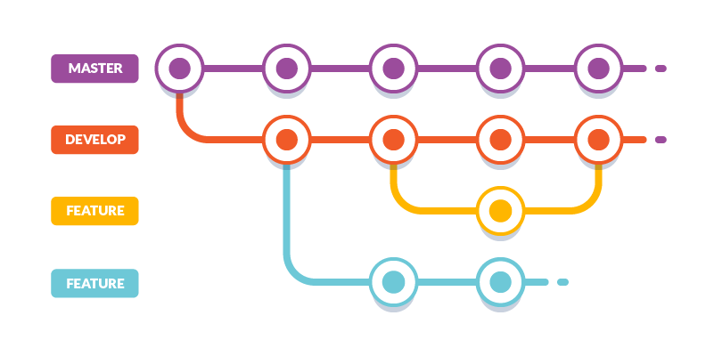

Thanks for your interest in cs_tools!¶
Thanks for your interest in cs_tools!¶
Everyone Can Participate!
We strongly believe everyone in PS/CS can participate, no matter what their technical proficiency is. If you don't know where to start, see the Github Issue Tracker filtered to Good First Issue.
This project is maintained by the Professional Services and Customer Success organizations at ThoughtSpot. It is meant to help client manage and scale their ThoughtSpot platform.
CS Tools offers this additional feature set primarily through a command line interface. Most tools have a python base, with an optional web-based application written primary in HTML and javascript.
To contribute to the project, you'll want to setup your development environment.
Installation¶
cs_tools can be directly used from GitHub by cloning the repository into a directory
on your machine1:
git clone https://github.com/thoughtspot/cs_tools.git
When cloning from git, you must install all required dependencies2 yourself:
pip install -r cs_tools/dev-requirements.txt
A note on our Branch Strategy¶

masteris our release branchdevis our coordination branch- All new features, hotfixes, and documentation updates require..
- pulls and branch from
dev - work to be done within a feature branch
- pull requests with code-review
- pulls and branch from
-
If you're already lost by the install instructions, you might want to start by setting up your environment! ↩
-
It is highly recommended that you first set up a virtual environment. ↩